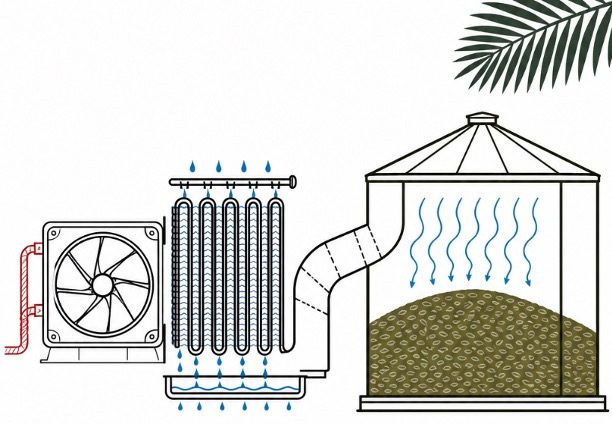

The Challenge: A rural town facing recurring food waste challenges lacked the energy infrastructure needed for reliable grain storage. As a major exporter of grain-based products, it was losing up to 50–60% of its grain during storage because of poorly engineered systems, a major hit to both food supply and the local economy.
Our Approach: I co-developed an evaporative cooling-based grain storage system as a finalist in the McMaster UN SDG Chemical Engineering Competition, targeting 50–60% post-harvest loss reduction and estimated $40,000/yr operating savings. The design was intentionally low-cost and energy-efficient, powered entirely by water and solar energy so it did not depend on a large electrical supply. Warm air is drawn through small pipes encased in damp clay; as the water in the clay evaporates, it pulls heat from the air into the clay and pipe walls. The resulting cooled air is then routed into the grain storage unit, keeping temperatures low enough to significantly slow spoilage and extend shelf life.
Reflection: The proposal was reviewed by industry professionals, professors and PhD candidates and finished top 5 out of 20+ teams. Beyond the recognition, the project was a rewarding blend of innovation and teamwork, giving me the chance to apply engineering knowledge to a real, high-impact problem. It was my first experience "thinking like an engineer", and it is a mindset I plan to carry into my future work.